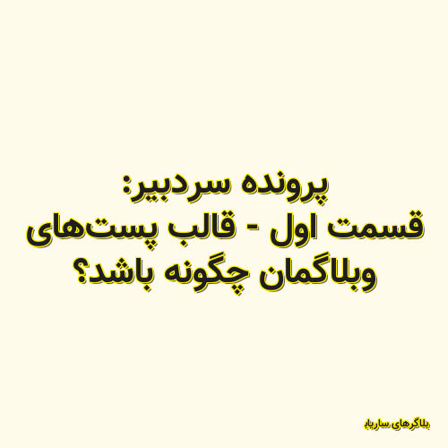

✖

پرونده سردبیر: قسمت اول - قالب پستهای وبلاگمان چگونه باشد؟
روزی روزگاری، مردم خواندن و نوشتن بلد نبودند. بعدهها روزنامه، نماد فرهیختگی و متعلق به شازدهها بود. روزی برتری تلوزیون بر رادیو را شاهد بودیم. و امروز عنان گسیتخگی محتوی و برده داری مدرن رسانههای موبایلی را شاهدیم. حداکثر زمان تمرکز مخاطب بر محتوی، به زیر یک دقیقه رسیده، و مخاطب امروز بیشتر از هر روز دیگری در گذشته تنوع طلب است. پس به قول شاعر «در پی قافیه و واژه نباش! واژههای امروزی، بگذر از دلسوزی.» با من همراه باشید برای خواندنِ متدِ پیشنهادی برای اینکه چگونه بنویسیم.
بلاگرهای ساریاب 2020-07-05 11:10:00 مطالعه پست گزارش خرابی لینک / محتوای مجرمانه / تغییر محتویات لینک